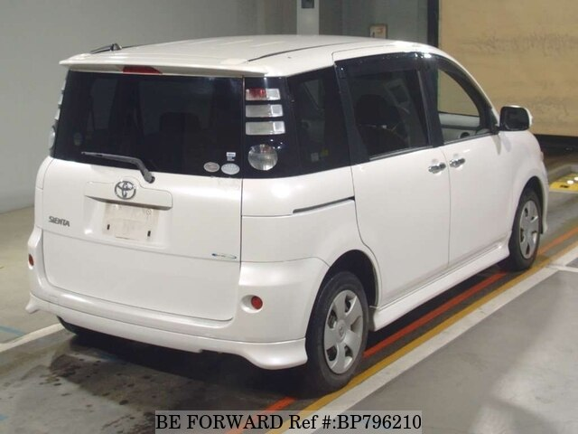
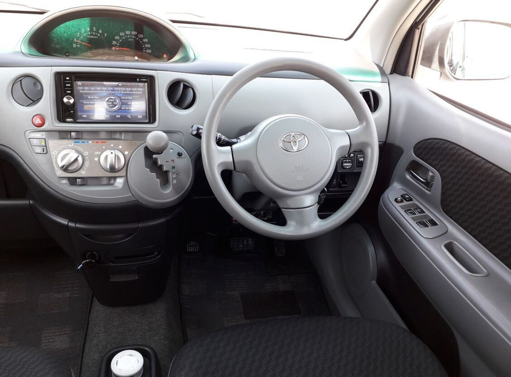
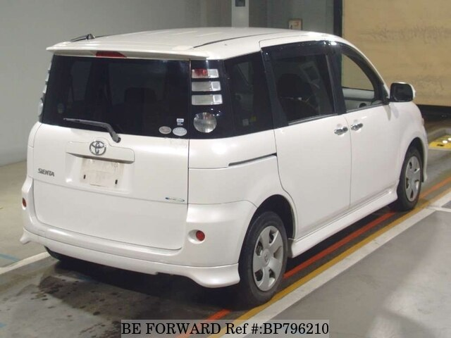
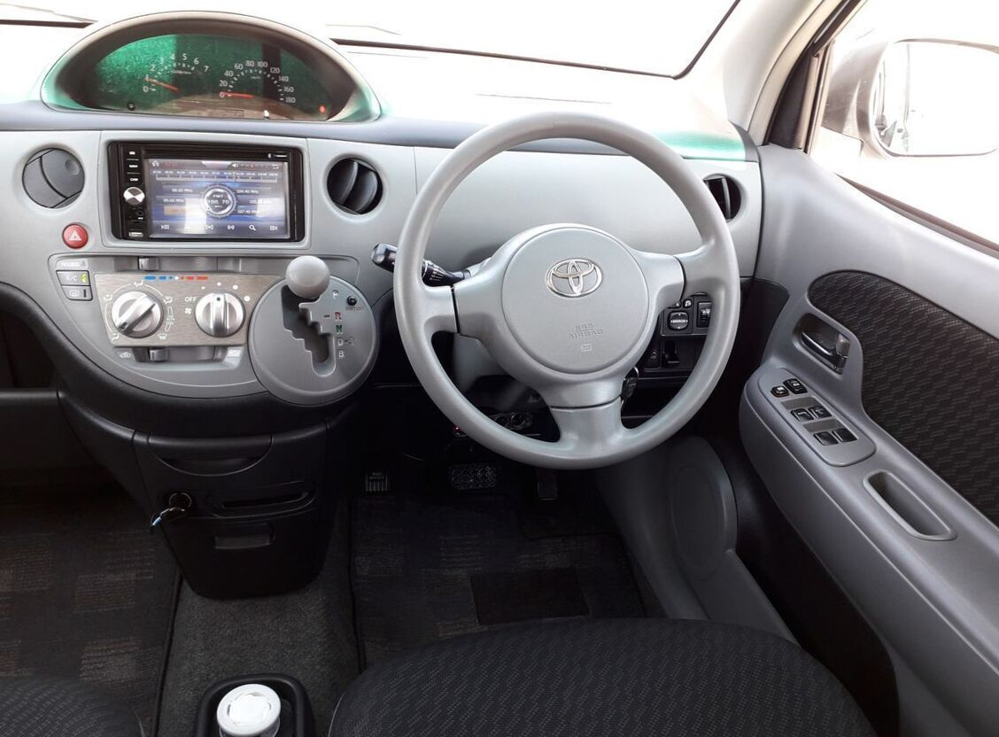

DBA-NCP81G BP796209
$1,660
SPECS
LOCATION KYUSHU
| Mileage | Year | Engine | Trans. | Fuel |
|---|---|---|---|---|
| 86,653 km | 2007/1 | 1,490cc | Petrol | |
| Ref. No. | BP796209 | Mileage | 86,653 km | |
| Chassis No. | NCP81-5023271 | Engine Code | 1NZ | |
| Model Code | DBA-NCP81G | Steering | Right | |
| Engine Size | 1,490cc | Ext. Color | Silver | |
| Location | KYUSHU | Fuel | Petrol | |
| Version/Class | X S EDITION | Seats | 7 | |
| Drive | 2wheel drive | Doors | 5 | |
| Transmission | Automatic | M3 | 11.571 | |
| Registration Year/month | 2007/1 | Dimension | 4.10×1.69×1.67 m | |
| Manufacture Year/month | 2006/12 | Weight Max.Cap | 1,220 kg |
DBA-NCP81G BP769837
SPECS
LOCATION KYUSHU
 



| Mileage | Year | Engine | Trans. | Fuel |
|---|---|---|---|---|
| 86,653 km | Ref. No. | BP769837 | Mileage | 50,927 km |
| Chassis No. | NCP81-5131429 | Engine Code | 1NZ. | |
| Model Code | DBA-NCP81G | Steering | Right | |
| Engine Size | 1,490cc | Ext. Color | Gray | |
| Location | YOKOHAMA | Fuel | Petrol | |
| Location | KYUSHU | Fuel | Petrol | |
| Version/Class | X EDITION | Seats | 7 | |
| Drive | 2wheel drive | Doors | 5 | |
| Transmission | Automatic | M3 | 11.571 | |
| Registration Year/month | 2010/11 | Dimension | 4.10×1.69×1.67 m | |
| Manufacture Year/month | 2010/6 | Weight Max.Cap | 1,210 kg |
E-RZJ95W BP703762
Price $6,158
SPECS
LOCATION YOKOHAMA
| Mileage | Year | Engine | Trans. | Fuel | |
|---|---|---|---|---|---|
| 359,093 km | 1997/12 | 2,690cc | AT | Petrol | |
| Ref. No. | BP703762 | Mileage | 359,093 km | ||
| Chassis No. | RZJ95-0009092 | Engine Code | 3RZ | ||
| Model Code | E-RZJ95W | Steering | Right | ||
| Engine Size | 2,690cc | Ext. Color | White | ||
| Location | YOKOHAMA | Fuel | Petrol | ||
| Version/Class | TX LIMITION | Seats | 7 | ||
| Drive | 2wheel drive | Doors | 5 | ||
| Registration Year/month | 1997/12 | Dimension | 4.80×1.82×1.91 m | ||
| Manufacture Year/month | 1997/11 | Weight Max.Cap | 1,870 kg |
DK5FW BP895686
SPECS
LOCATION YOKOHAMA
| Mileage | Year | Engine | Trans. | Fuel |
|---|---|---|---|---|
| 31,645 km | 2015/10 | 1,500cc | AT | Diesel | 31,645 km | Ref. No. | BP895686 | Mileage | 31,645 km |
| Chassis No. | DK5FW-117845 | Engine Code | - | |
| Model Code | DK5FW | Steering | Right | |
| Engine Size | 1,500cc | Ext. Color | Black | |
| Location | YOKOHAMA | Fuel | Diesel | |
| Version/Class | Seats | 5 | ||
| Drive | 2wheel drive | Doors | 5 | |
| Transmission | Automatic | M3 | 11.649 | |
| Registration Year/month | 2015/10 | Dimension | 4.27×1.76×1.55 m | |
| Manufacture Year/month | 1997/ | Weight Max.Cap | 1,258kg |